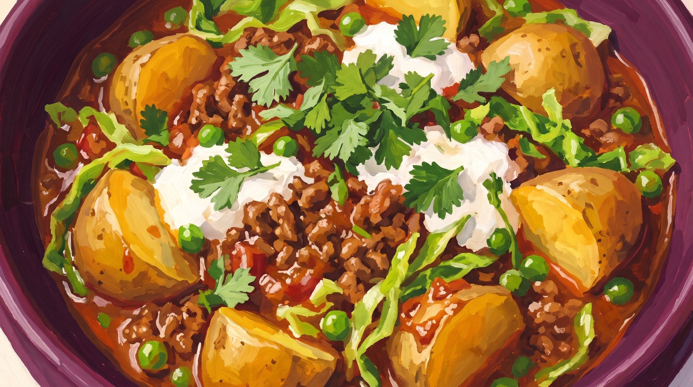

Lamb keema with new potatoes and cabbage
a large casserole with a lid, a wooden spoon
60m: 25m prep + 35m cook
ingredients
1 tbsp rapeseed oil
2 onions
500g lamb mince
3 cloves garlic
500g new potatoes
1 tin chopped tomatoes
1 pointed cabbage
150g frozen peas
4 tbsp natural yoghurt
2 onions
500g lamb mince
3 cloves garlic
500g new potatoes
1 tin chopped tomatoes
1 pointed cabbage
150g frozen peas
4 tbsp natural yoghurt
seasoning
salt
cumin
garam masala
chilli flakes
coriander
cumin
garam masala
chilli flakes
coriander
method
- 1Brown the sliced onions and lamb in the oil in a large casserole for 10 minutes, breaking up the mince.
- 2Stir in the crushed garlic, 2 tsp each of cumin and garam masala and a pinch of chilli. Cook for 1 minute.
- 3Add the halved potatoes, tomatoes, 300ml water and a little salt. Cover and simmer for 20 minutes.
- 4Add the shredded cabbage and peas and cook uncovered for 8 minutes, until the cabbage wilts. Top with coriander and yoghurt.